ECの運用を中心に、デザイン、コーディング、サーバー関係、プログラミング、SEO、マーケティング等を仕事で携わってきました。
2015年6/29より個人事業として独立し、フリーランスのWebクリエイターとして活動しています。
これまでの経験を活かし、ホームページを作って終わるのではなく、作ったサイトをどのように活用し、どのように目的を達成していくのかまで一緒に考えることができますので、今あるホームページをどうやって運用すればいいのか？といったお悩みをお抱えのサイトオーナー様からも、お気軽にご相談いただければと思います。